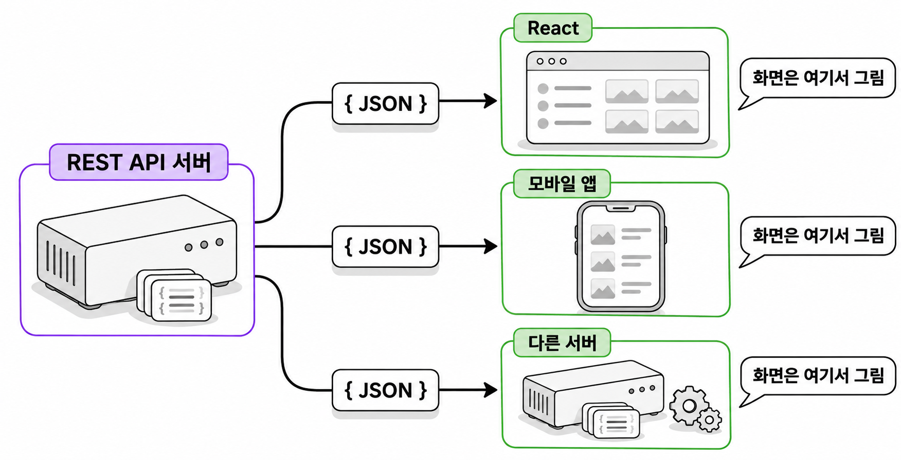
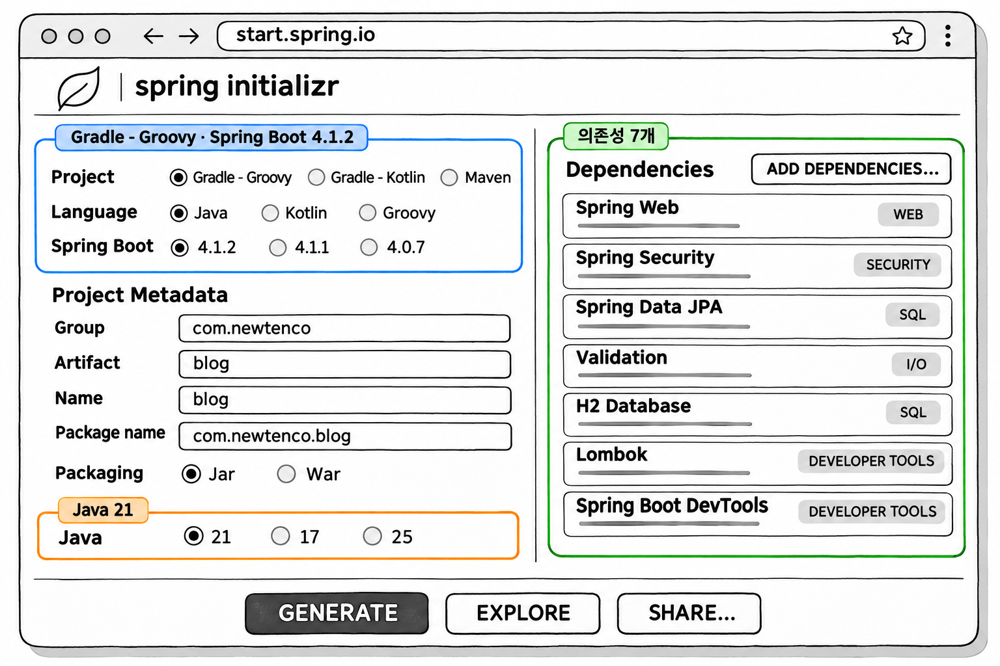
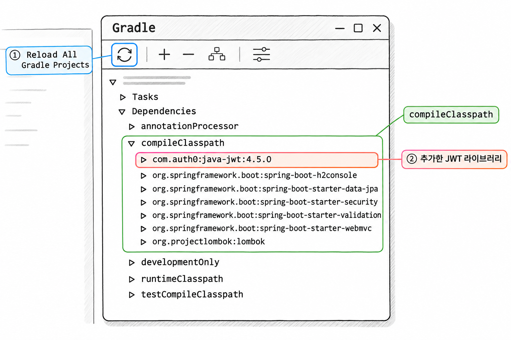
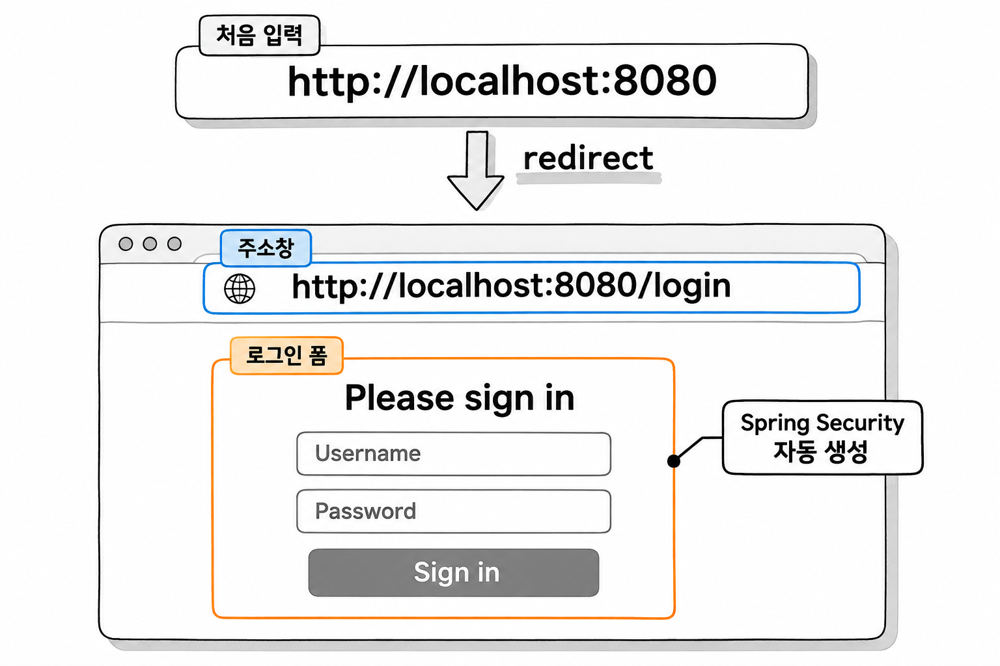

1장. REST API 프로젝트 준비하기
1. REST API와 SSR
1.1 REST API의 정의
REST(Representational State Transfer)는 로이 필딩(Roy Fielding)이 2000년 박사학위 논문에서 소개한 웹 아키텍처 원칙입니다. REST API는 이 원칙에 따라 클라이언트와 서버가 데이터를 주고받는 방식입니다. 원래 REST에는 클라이언트-서버 분리, 무상태, 캐시, 균일 인터페이스 같은 제약이 여러 개 있습니다. 이 책에서는 실습에 필요한 세 가지 약속만 지킵니다.
| 약속 | 내용 | 예 |
|---|---|---|
| 자원은 URI로 표현 | 다룰 대상을 주소로 가리킵니다 | /api/users/me |
| 행위는 HTTP 메서드로 표현 | 주소가 같아도 메서드에 따라 하는 일이 달라집니다 | GET 조회 · POST 생성 · PUT 수정 · DELETE 삭제 |
| 응답은 데이터 | 서버는 HTML 화면 대신 JSON 데이터를 돌려줍니다 | {"id":1,"username":"ssar"} |
JSON으로 응답하는 것은 REST의 필수 조건이 아닙니다. 이 책이 고른 방식입니다.
서버가 데이터만 돌려주면 화면은 데이터를 받은 쪽에서 그립니다. 그래서 서버 하나가 브라우저의 React 화면, 모바일 앱, 다른 서버의 요청에 모두 응답할 수 있습니다.

1.2 SSR 응답과 REST 응답 비교
Mustache나 Thymeleaf로 만들어 본 게시판은 SSR(Server Side Rendering) 방식입니다. 서버가 템플릿에 데이터를 채워 완성된 HTML 문서를 보냅니다. REST API 방식에서는 서버가 데이터를 JSON으로 바꿔 보내면 할 일이 끝납니다.
| 구분 | SSR | REST API |
|---|---|---|
| 서버 응답 | HTML 문서 | JSON 데이터 |
| 화면을 그리는 곳 | 서버(Mustache, Thymeleaf) | 클라이언트(React, 앱) |
| 응답을 쓸 수 있는 클라이언트 | 주로 브라우저 | 브라우저, 모바일 앱, 다른 서버 |
| 컨트롤러 | @Controller + 뷰 이름 반환 | @RestController + 객체 반환 |
두 컨트롤러 코드는 반환값만 다릅니다. SSR 컨트롤러는 뷰 이름을 반환하고, 스프링은 그 이름으로 템플릿을 찾아 HTML을 만듭니다.
코드 조각
@Controller
public class UserViewController {
@GetMapping("/users/me")
public String me(Model model) {
model.addAttribute("username", "ssar");
return "user/me"; // templates/user/me.mustache 로 HTML을 만든다
}
}REST 컨트롤러는 객체를 반환합니다. @RestController가 붙은 클래스에서는 스프링이 반환된 객체를 JSON으로 바꿔 응답 본문에 씁니다.
코드 조각
@RestController
public class UserApiController {
@GetMapping("/api/users/me")
public Map<String, Object> me() {
return Map.of("id", 1, "username", "ssar"); // JSON으로 바뀌어 응답된다
}
}같은 사용자 정보를 요청해도 클라이언트가 받는 응답 본문은 다음처럼 다릅니다.
코드 조각
<!-- SSR 응답 -->
<html><body><h1>ssar 님의 정보</h1></body></html>코드 조각
{"status":200,"msg":"성공","body":{"id":1,"username":"ssar"}}REST 응답에 있는 status · msg · body는 이 책에서 쓸 공통 응답 형식입니다. 응답마다 형식이 다르면 클라이언트가 응답을 해석하기 어렵습니다. 그래서 4장에서 모든 응답을 이 형식으로 맞춥니다.
2. 프로젝트 만들기
2.1 start.spring.io 설정
start.spring.io에서 아래 값으로 프로젝트를 만듭니다. 내려받은 압축 파일을 풀고 IntelliJ IDEA로 엽니다.
| 항목 | 값 |
|---|---|
| Project | Gradle - Groovy |
| Language | Java |
| Spring Boot | 4.1.2 |
| Group | com.newtenco |
| Artifact | blog |
| Packaging | Jar |
| Java | 21 |
| Dependencies | Spring Web, Spring Security, Spring Data JPA, Validation, H2 Database, Lombok, Spring Boot DevTools |
각 의존성을 이 책의 어디에서 쓰는지는 다음과 같습니다.
| 의존성 | 쓰는 곳 |
|---|---|
| Spring Web | REST 컨트롤러와 JSON 응답 |
| Spring Security | 필터 체인, 인증 · 인가, BCrypt |
| Spring Data JPA | User · Board · Reply 엔티티와 Repository |
| Validation | 회원가입 요청의 @Valid 검증 |
| H2 Database | 개발용 메모리 DB |
| Lombok | getter · 생성자 · 빌더 자동 생성 |
| Spring Boot DevTools | 코드를 바꾸면 서버 자동 재시작 |

생성형 예시 · 실제 실행 안 함
2.2 java-jwt 의존성 추가
JWT(JSON Web Token)를 만들고 검증하는 라이브러리는 start.spring.io 목록에 없습니다. 그래서 build.gradle에 직접 적습니다. 이 책은 Auth0의 java-jwt를 씁니다. 토큰 생성과 검증을 메서드 몇 개로 끝낼 수 있어서 3장에서 만들 JwtUtil의 코드가 짧아집니다.
코드 조각
implementation 'com.auth0:java-jwt:4.5.0'dependencies 블록에 이 줄을 넣으면 build.gradle은 다음과 같이 완성됩니다. start.spring.io가 만든 파일과 비교해서 빠진 줄이 있으면 추가합니다.
예제 1-1 — 프로젝트 빌드 설정
파일명: build.gradle
plugins {
id 'java'
id 'org.springframework.boot' version '4.1.2'
id 'io.spring.dependency-management' version '1.1.7'
}
group = 'com.newtenco'
version = '0.0.1-SNAPSHOT'
description = 'Spring Boot 4 + Security + JWT REST API'
java {
toolchain {
languageVersion = JavaLanguageVersion.of(21)
}
}
repositories {
mavenCentral()
}
dependencies {
// JWT 라이브러리 (auth0)
implementation 'com.auth0:java-jwt:4.5.0'
implementation 'org.springframework.boot:spring-boot-h2console'
implementation 'org.springframework.boot:spring-boot-starter-data-jpa'
implementation 'org.springframework.boot:spring-boot-starter-security'
implementation 'org.springframework.boot:spring-boot-starter-validation'
implementation 'org.springframework.boot:spring-boot-starter-webmvc'
compileOnly 'org.projectlombok:lombok'
developmentOnly 'org.springframework.boot:spring-boot-devtools'
runtimeOnly 'com.h2database:h2'
annotationProcessor 'org.projectlombok:lombok'
testImplementation 'org.springframework.boot:spring-boot-starter-data-jpa-test'
testImplementation 'org.springframework.boot:spring-boot-starter-security-test'
testImplementation 'org.springframework.boot:spring-boot-starter-validation-test'
testImplementation 'org.springframework.boot:spring-boot-starter-webmvc-test'
testCompileOnly 'org.projectlombok:lombok'
testRuntimeOnly 'org.junit.platform:junit-platform-launcher'
testAnnotationProcessor 'org.projectlombok:lombok'
}
tasks.named('test') {
useJUnitPlatform()
}실행 결과
IntelliJ 오른쪽 Gradle 창에서 Reload All Gradle Projects 버튼을 누르면 의존성을 내려받습니다. 다 내려받으면 Gradle 창의 Dependencies 목록에 com.auth0:java-jwt:4.5.0이 나타납니다.

생성형 예시 · 실제 실행 안 함
2.3 스프링부트 4에서 달라진 의존성
스프링부트 3 프로젝트의 의존성과 예제 1-1을 비교하면 이름이 바뀐 것과 새로 생긴 것이 보입니다. 스프링부트 4는 자동 설정을 기능별 모듈로 잘게 나눴고, 그에 맞춰 스타터 이름도 바뀌었습니다.
| 스프링부트 3 | 스프링부트 4 | 달라진 점 |
|---|---|---|
spring-boot-starter-web | spring-boot-starter-webmvc | 웹 스타터의 이름이 바뀌었습니다. 예전 이름은 사용 중단 예정입니다 |
| (스타터에 포함) | spring-boot-h2console | H2 콘솔 자동 설정이 별도 모듈로 분리되었습니다 |
spring-boot-starter-test 하나 | ...-webmvc-test, ...-data-jpa-test, ...-security-test 등 | 테스트 스타터도 기능별로 나뉘었습니다 |
실습에 바로 영향을 주는 것은 spring-boot-h2console입니다. 이 의존성이 없으면 spring.h2.console.enabled=true를 설정해도 /h2-console 주소가 열리지 않습니다. 스프링부트 3 자료를 보고 설정만 따라 하면 여기서 막히기 쉽습니다.
인터넷에서 찾은 스프링부트 3 예제를 가져올 때도 주의해야 합니다. spring-boot-starter-web 같은 예전 스타터 이름은 예제 1-1에 나온 이름으로 바꿔 씁니다.
3. 시큐리티 기본 동작 확인하기
3.1 모든 요청이 로그인 화면으로 가는 이유
설정 파일이나 클래스를 하나도 만들지 않은 상태에서 BlogApplication을 실행합니다. 그리고 브라우저로 http://localhost:8080에 접속합니다. 컨트롤러를 만들지 않았는데도 "Please sign in" 로그인 화면이 나타납니다. http://localhost:8080/hello처럼 없는 주소로 접속해도 같은 화면으로 이동합니다.

생성형 예시 · 실제 실행 안 함
클래스패스에 spring-boot-starter-security가 있으면 스프링부트가 보안 기본 설정을 자동으로 등록합니다. 개발자가 보안 설정을 하나도 하지 않았을 때 이 기본 설정이 쓰이며, 규칙은 "모든 요청은 인증된 사용자만 통과"입니다. 인증되지 않은 브라우저 요청이 들어오면 스프링 시큐리티는 요청을 컨트롤러로 넘기지 않고 /login으로 리다이렉트합니다. 이 로그인 화면도 시큐리티가 만들어 줍니다.
보안 라이브러리는 기본값을 "모두 막기"로 둡니다. 개발자가 설정을 깜빡해도 정보가 새지 않게 하려는 것입니다. 6장에서 SecurityFilterChain을 직접 등록하면 이 기본 설정이 이 책의 규칙으로 바뀝니다. 요청이 컨트롤러에 닿기 전에 어디서 막히는지는 5장의 필터 체인에서 설명합니다.
3.2 임시 사용자와 비밀번호
로그인 화면에 넣을 값은 서버를 실행한 콘솔에 출력되어 있습니다.
실행 결과
Using generated security password: 8e557245-73e2-4286-969a-ff57fe326336
This generated password is for development use only. Your security configuration must be updated before running your application in production.등록된 사용자 정보가 없어서 스프링부트가 임시 사용자 하나를 메모리에 만든 것입니다. 이 사용자의 아이디는 user이고 비밀번호는 무작위 값입니다. 비밀번호는 서버를 다시 실행할 때마다 바뀌므로 위 값과 독자의 콘솔에 나온 값은 다릅니다.
아이디에 user, 비밀번호에 콘솔에 나온 값을 넣고 로그인하면 다음 화면이 나옵니다.
실행 결과
Whitelabel Error Page
This application has no explicit mapping for /error, so you are seeing this as a fallback.
... There was an unexpected error (type=Not Found, status=404).로그인은 통과했지만 / 주소를 처리할 컨트롤러가 없어서 404가 나온 것입니다. 이 화면에서 요청은 시큐리티 검사를 먼저 통과해야 컨트롤러를 찾으러 간다는 것을 알 수 있습니다.
이 프로젝트에서는 시큐리티의 기본 로그인 기능을 쓰지 않습니다. 7장에서 로그인 API를 직접 만들고, 요청마다 JWT를 검사하는 필터로 인증합니다. 6장에서 SecurityConfig를 작성한 뒤에도 "Using generated security password" 로그는 계속 출력됩니다. 쓰지 않는 임시 사용자의 비밀번호이므로 무시해도 됩니다.
4. 프로파일 설정하기
4.1 공통 설정과 dev 설정 나누기
프로파일(profile)은 실행 환경에 맞는 설정 묶음을 골라 쓰게 해 주는 스프링 기능입니다. 개발할 때는 H2 메모리 DB를 쓰고 SQL 로그를 자세히 보는 편이 좋습니다. 실제 서비스에서는 다른 DB를 쓰고 로그를 줄여야 합니다. 설정을 한 파일에 모두 적으면 배포할 때마다 값을 고쳐야 합니다. 그래서 공통 값과 개발용 값을 파일 두 개에 나눠 적습니다.
| 파일 | 담는 값 | 적용 시점 |
|---|---|---|
application.properties | 어느 환경에서나 같은 값, 사용할 프로파일 이름 | 항상 |
application-dev.properties | 개발 환경에서만 쓰는 값(H2, SQL 로그, 개발용 CORS 출처) | dev 프로파일이 활성화되었을 때 |
application.properties에 spring.profiles.active=dev를 적으면 스프링부트는 파일 이름 규칙에 따라 application-dev.properties도 함께 읽습니다. 두 파일에 같은 키가 있으면 프로파일 파일의 값이 쓰입니다. 운영 환경이 생기면 application-prod.properties를 만들고 활성 프로파일을 prod로 바꿉니다.
4.2 H2 · JPA · data.sql 설정
src/main/resources에 설정 파일 두 개를 만듭니다. spring.sql.init.data-locations가 가리키는 db/data.sql의 내용은 2장에서 채웁니다. 다만 이 파일이 없으면 서버가 시작할 때 스크립트를 찾지 못해 실행이 멈춥니다. 그래서 지금은 주석 한 줄만 있는 파일을 만들어 둡니다.
예제 1-2 — 공통 설정과 dev 설정
이어서: 예제 1-1
파일명: src/main/resources/application.properties
spring.application.name=blog
# 프로필 설정: application-dev.properties 를 함께 읽는다
spring.profiles.active=dev파일명: src/main/resources/application-dev.properties
# ===== Server =====
server.port=8080
server.servlet.encoding.charset=UTF-8
server.servlet.encoding.force=true
# ===== H2 Datasource (메모리 모드: 서버를 끄면 데이터가 사라짐) =====
spring.datasource.driver-class-name=org.h2.Driver
spring.datasource.url=jdbc:h2:mem:test
spring.datasource.username=sa
spring.datasource.password=
spring.h2.console.enabled=true
# ===== JPA / Hibernate =====
# create: 실행할 때마다 테이블을 새로 만든다 (개발 단계 전용, 운영에서 사용 금지)
spring.jpa.hibernate.ddl-auto=create
spring.jpa.show-sql=true
spring.jpa.properties.hibernate.format_sql=true
spring.jpa.open-in-view=false
# ===== SQL Init (data.sql) =====
spring.sql.init.data-locations=classpath:db/data.sql
# 테이블 생성(JPA) 이후에 data.sql 을 실행한다
spring.jpa.defer-datasource-initialization=true
# ===== Logging Level =====
logging.level.com.newtenco.blog=DEBUG
# ===== CORS Allow (콤마로 여러 개 지정 가능) =====
app.cors.allowed-origins=http://localhost:3000,http://localhost:5173파일명: src/main/resources/db/data.sql
-- 더미 데이터는 2장에서 작성합니다실행 결과
서버를 다시 실행하면 콘솔 앞부분에 활성 프로파일과 H2 콘솔 주소가 출력됩니다.
The following 1 profile is active: "dev"
...
H2 console available at '/h2-console'. Database available at 'jdbc:h2:mem:test'첫 줄이 보이면 application-dev.properties가 적용된 것입니다. 이 줄 대신 No active profile set이 나오면 application.properties의 spring.profiles.active 값을 확인합니다.
SSR 게시판에서 쓰던 설정과 뜻이 다르거나 처음 보는 H2 · JPA 설정은 다음과 같습니다.
| 설정 | 의미 |
|---|---|
spring.datasource.url=jdbc:h2:mem:test | test라는 이름의 메모리 DB를 씁니다. 서버를 끄면 데이터가 모두 사라집니다 |
spring.h2.console.enabled=true | 브라우저에서 DB를 볼 수 있는 /h2-console을 엽니다 |
spring.jpa.hibernate.ddl-auto=create | 실행할 때마다 기존 테이블을 지우고 엔티티를 보고 새로 만듭니다. 개발 단계 전용입니다 |
spring.jpa.open-in-view=false | 트랜잭션이 끝나면 영속성 컨텍스트를 닫고 DB 연결을 반납합니다 |
spring.sql.init.data-locations | 서버가 시작할 때 실행할 SQL 파일의 위치입니다 |
spring.jpa.defer-datasource-initialization=true | JPA가 테이블을 만든 다음에 data.sql을 실행합니다 |
open-in-view의 기본값은 true입니다. 이 값이 true면 응답이 나갈 때까지 DB 연결을 붙잡고 있어서, 요청이 몰리면 연결이 모자랄 수 있습니다. false로 두면 서비스의 트랜잭션 안에서 필요한 데이터를 모두 꺼내 DTO에 담아야 합니다. 7장에서 응답 DTO를 만드는 이유 중 하나도 open-in-view를 false로 두었기 때문입니다.
defer-datasource-initialization을 빼면 실행 순서가 뒤집힙니다. data.sql이 먼저 실행되어 아직 만들어지지 않은 테이블에 INSERT하다가 오류가 납니다.
지금 /h2-console에 접속하면 H2 콘솔이 아니라 3절의 로그인 화면이 나옵니다. 시큐리티가 모든 요청을 막고 있기 때문입니다. 콘솔을 여는 설정은 6장 5절에서 합니다.
4.3 CORS 허용 출처 값 미리 적어 두기
application-dev.properties의 마지막 줄은 스프링이 미리 정해 둔 키가 아닙니다. 이 프로젝트에서 직접 만든 키입니다.
코드 조각
app.cors.allowed-origins=http://localhost:3000,http://localhost:5173브라우저는 기본적으로 다른 주소에서 불러온 화면이 이 서버로 보내는 요청을 막습니다. 이 값에는 요청을 허용할 화면의 주소를 적습니다. 3000과 5173은 React 개발 서버가 주로 쓰는 포트입니다.
허용할 주소는 환경마다 다릅니다. 개발 중에는 localhost를, 운영에서는 실제 도메인을 허용해야 합니다. 그래서 이 값을 코드에 넣지 않고 프로파일 파일에 둡니다. IntelliJ가 이 키에 "Cannot resolve configuration property" 경고를 띄울 수 있습니다. 직접 만든 키라서 나오는 경고이므로 실행에는 문제가 없습니다.
CORS가 무엇이고 브라우저가 왜 요청을 막는지는 5장에서 설명합니다. 이 값을 읽어 허용 규칙을 만드는 코드는 6장 CORS 설정에서 작성합니다.